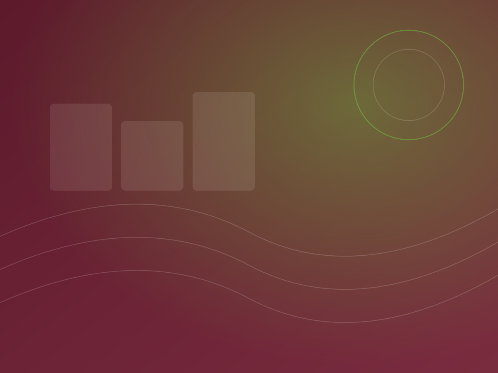

Purpose
To expand minds — creating content that makes learning accessible, accurate and relevant across Central Africa.

A Central African publishing house with the backing of a continental group and the instincts of a local team.

Longhorn Publishers Cameroon Ltd is a subsidiary of Longhorn Publishers PLC, a group with roughly six decades of experience publishing educational and general-interest titles across Africa.
That heritage gives us editorial standards, production capacity and institutional relationships that a new entrant simply cannot assemble. What we add is proximity: a team based in Tsinga, Yaoundé, working daily in the Cameroonian and Congolese education context, in both official languages.
We describe ourselves as content creators and platform business providers — we make the content, and we run the process that gets it into learners' hands.
Why partners choose usTo expand minds — creating content that makes learning accessible, accurate and relevant across Central Africa.
To be the publishing partner of choice in Cameroon and the DRC for institutions that will not compromise on quality.
To deliver end-to-end publishing — editorial, creative and production — bilingually, on schedule, at a fair price.
Quality, cultural relevance, flexibility and accountability — held at every stage, not just at sign-off.
Flexible enough to adapt to changing requirements mid-project — which, on real publishing schedules, is the norm rather than the exception.
Editors, proofreaders and translators working across English and French, with subject specialists for curriculum-aligned material.
Designers, illustrators and typesetters who take a manuscript through layout, artwork and print-ready files.
A named lead per project owning the schedule, the language tracks and the client relationship end to end.

Every project passes a dedicated Quality Review stage before it is released to print — proofreading, factual verification and curriculum alignment, checked against the brief agreed at consultation.
Cultural relevance is part of that check, not a separate courtesy: illustrations, names, examples and contexts are reviewed so that learners recognise themselves in the material.
See our processTell us the scope and the languages you need.